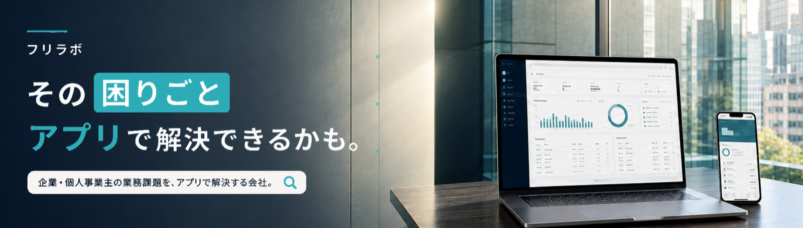

企業・個人事業主の業務課題を、アプリで解決しています。手作業や属人化を、現場に合った仕組みへ。
御社の業種・強み・サービス内容に合わせて、オーダーメイドの診断アプリを制作します
言葉で説明するより、実際に触っていただくのが一番早いと思います。すべて実際に動作します。
7つの質問でリスクを点数化し、4段階で診断。専門家への相談を後押しする作りです。
5つの質問から5つのタイプに分岐。診断結果からおすすめメニューを提示し、来店予約へつなげます。
6つの質問から4タイプに分岐。個別相談・講座への案内を、診断結果に合わせて出し分けます。
上記以外の業種でも、御社の商材に合わせて一から設計します。まずはお気軽にご相談ください。
初期登録費用 20,000円（税込・設問設計や実装にかかる制作費として初回のみ）
月額はいずれもホスティング・保守・軽微な文言修正込みです。制作期間の目安は2〜3週間程度。
事業立ち上げ期のため、ご依頼いただける件数に上限を設けて対応しています。
はい、設問・スコアロジック・デザインは案件ごとに設計し直します。裏側の仕組み（診断エンジンの土台）は共通化していますが、これは同じ質の実装を安定して、かつ早くお届けするための共通化であり、御社に見えている設問・結果・見た目の部分がテンプレートのまま流用されることはありません。公開しているサンプル3つが、実際に業種ごとにどれだけ変わるかの実例です。
正直にお伝えすると、「診断を設置したら自動的に問い合わせが増える」というものではありません。診断は、訪れた人が自分ごととして受け止めやすく、気軽に反応しやすい入口を作る仕組みであり、実際の反応数は、どこに設置するか、どれくらいの人に見てもらえるかによって変わります。アクセス解析で「何人が診断を始め、何人が最後まで答えたか」を見える化し、改善のヒントをお渡しします。
サンプル3つは現時点でいずれも、診断の回答データをサーバーに送信・保存しない設計です（ブラウザの中だけで処理が完結します）。リード獲得フォームを実際に稼働させる場合は、御社が管理できる外部サービスと連携する形を想定しており、フリラボ側でお客様の個人情報を保管することはありません。
内容の軽微な修正（文言の差し替えなど）は月額の範囲内で対応します。設問自体の作り直しなど大きな変更は都度お見積もりとなります。解約については長期契約の縛りは設けておらず、月単位でのご相談に応じます。
はい。納品物はサーバー不要の軽量なWebページ（単一ファイル）のため、既存のホームページに埋め込む、SNSの固定リンクに設置する、LINE公式アカウントのリッチメニューから飛ばすなど、御社の運用に合わせて自由に設置場所を選んでいただけます。
御社の業種・商材に合わせて設問とスコアロジックを一から設計し、デザイン・ブランディングを反映して実装するための制作費です。月額はその後のホスティング・保守・更新にかかる費用として、初期の制作費とは別立てにしています。